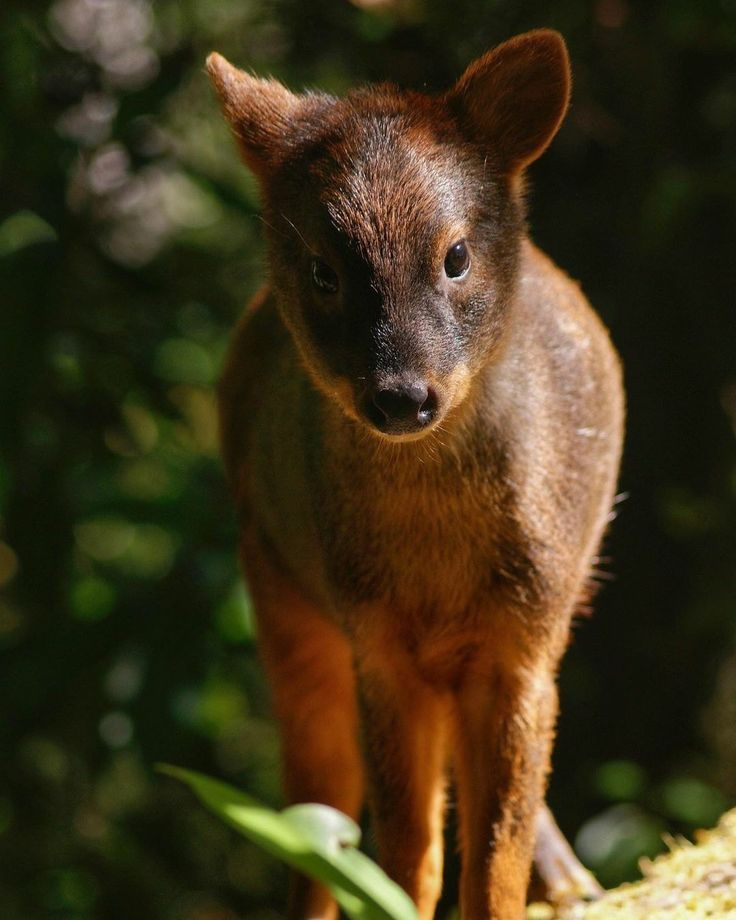
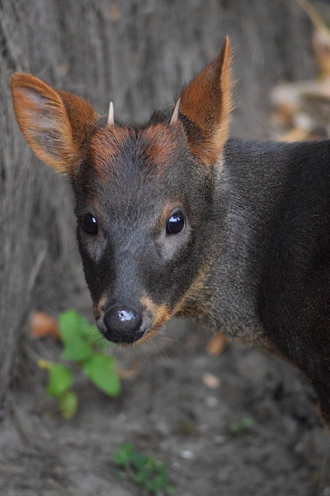
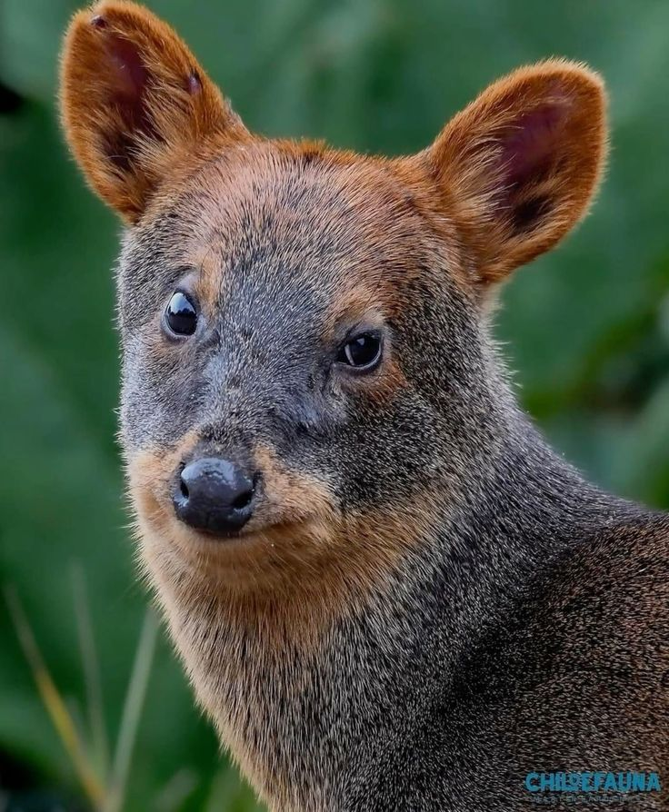

Detalles del Pudú

habitat y ubicacion geográfica
El pudú (Pudu puda) es el ciervo más pequeño del mundo, con una altura de 32 a 35 cm y un peso de 6 a 13 kg. Es un animal tímido y solitario que habita los bosques templados del sur de Chile y Argentina. Su pelaje es denso y suave, generalmente de color marrón oscuro, lo que le permite camuflarse en su entorno natural.

habitos alimenticios
El pudú es un mamífero herbívoro cuya dieta se compone de hojas, brotes tiernos, frutos, semillas, hongos y cortezas. Presenta un comportamiento alimenticio selectivo, eligiendo plantas con alto contenido nutritivo. Generalmente se alimenta durante el amanecer y el atardecer, evitando las horas de mayor actividad de depredadores. Su rol en el ecosistema es importante, ya que contribuye a la dispersión de semillas.

Reproducción
El ciclo reproductivo del pudú ocurre una vez al año. La gestación dura aproximadamente siete meses, tras los cuales nace una sola cría. Las crías presentan un pelaje con manchas blancas que les permite camuflarse en su entorno, desapareciendo a medida que crecen. Durante sus primeras semanas de vida, permanecen ocultas mientras la madre se aleja para alimentarse, regresando periódicamente para amamantarlas.
Estado de Conservación
| Categoría | Información |
|---|---|
| Estado | Vulnerable (VU) |
| Población estimada | Menos de 10.000 individuos |
| Distribución | Sur de Chile y Argentina |
| Principales amenazas | Deforestación, perros domésticos, atropellos, caza furtiva |
| Medidas de protección | Áreas protegidas, educación ambiental, programas de conservación |